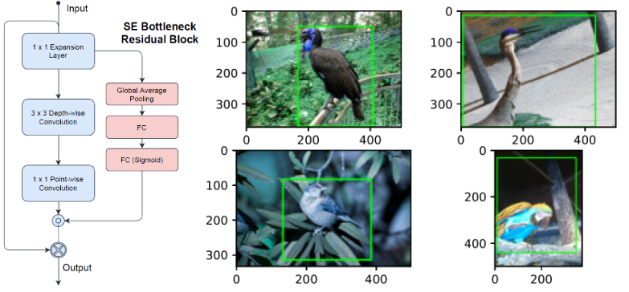
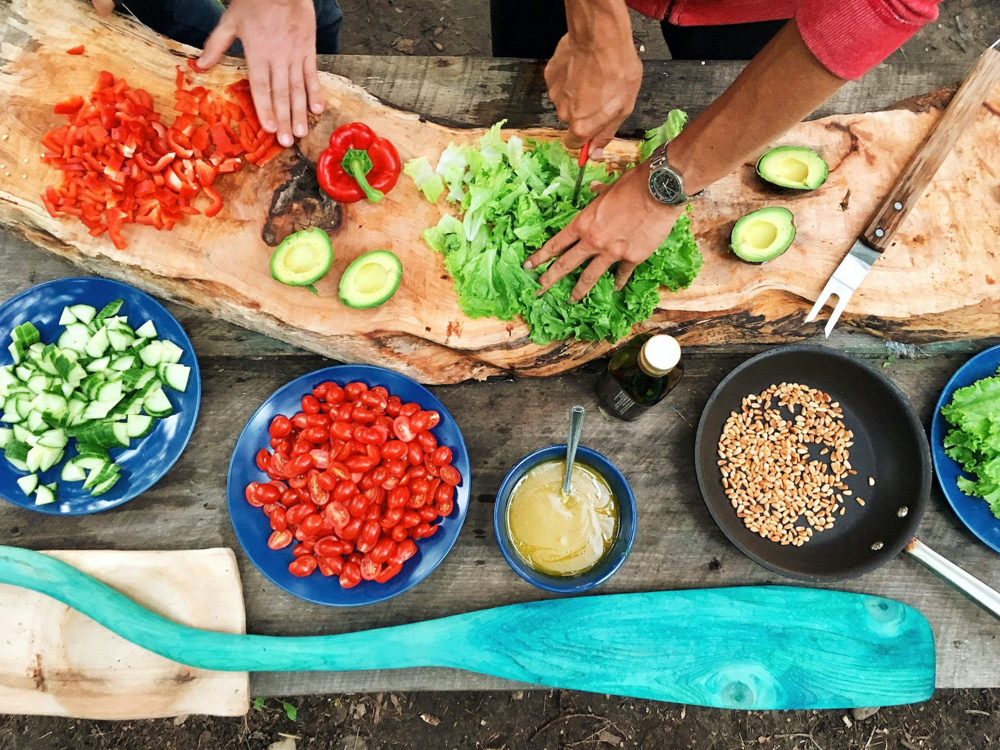
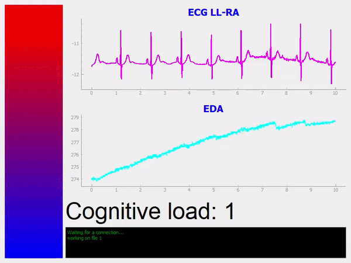
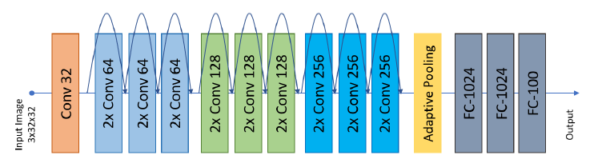
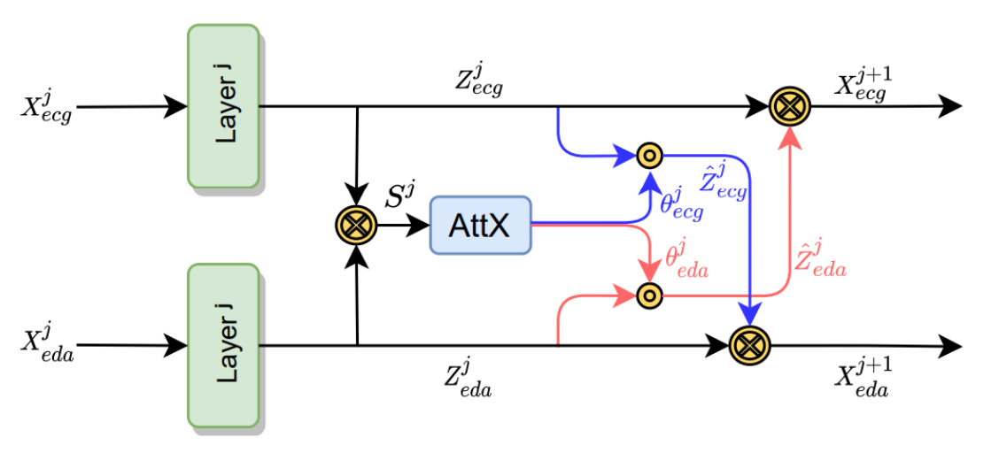
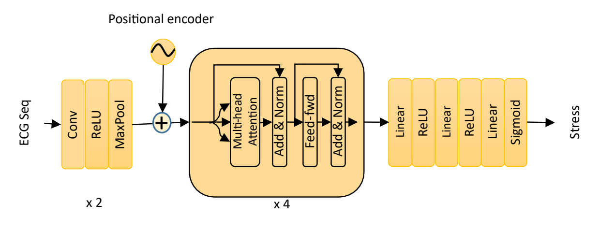
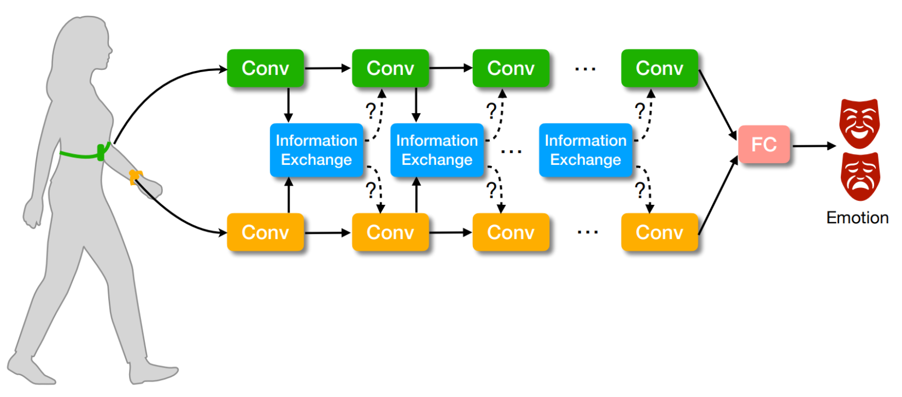
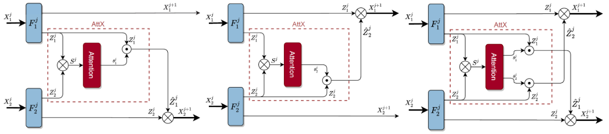

Research & Projects
Research Interests
Multimodal Machine Learning
Advanced fusion techniques for wearable sensor data and physiological signals
Affective Computing
Emotion recognition and stress detection using physiological biomarkers
Deep Learning
Transformer architectures and attention mechanisms for time series analysis
Time Series Analysis
Real-time processing and analysis of wearable sensor data
Selected Projects
Forecast Bike Rental Demand
Machine learning project to predict bike rental demand using historical data and weather patterns.
View Project
Lightweight Object-Detection with SE-MobileNet-SSD
Efficient object detection system using Squeeze-and-Excitation MobileNet architecture.
View Project
What's Cooking? Predict Dish's Cuisine Based On Ingredients
Machine learning model to predict cuisine type based on ingredient lists.
View Project
Cognitive Load Estimation in Real-time
Real-time system for estimating cognitive load using physiological signals.
View Project
SimpleNet in Python using Pytorch
Implementation of SimpleNet architecture for CIFAR dataset classification.
View ProjectDetermine If Online Transaction Is Fraudulent Or Not
Machine learning model for detecting fraudulent online transactions.
View ProjectResearch Methodology
Experimental Design
Rigorous experimental protocols for data collection from wearable sensors and physiological monitoring devices.
Data Analysis
Advanced statistical analysis and machine learning techniques for multimodal sensor data fusion.
Implementation
Development of novel deep learning architectures using PyTorch and TensorFlow frameworks.
Validation
Comprehensive evaluation using cross-validation and state-of-the-art benchmarks for performance assessment.
Academic Publications

Attentive Cross–modal Connections For Deep Multimodal Wearable–based Emotion Recognition
IEEE Affective Computing and Intelligent Interaction (ACIIW)
Research on attentive cross-modal connections for emotion recognition using wearable devices.
Read Paper
A Transformer Architecture For Stress Detection From ECG
ACM International Symposium on Wearable Computers (ISWC)
Transformer-based architecture for stress detection using ECG signals.
Read Paper
AttX: Attentive Cross-Connections For Fusion Of Wearable Signals In Emotion Recognition
Arxiv [Under Review at IEEE Journal]
Advanced research on attentive cross-connections for wearable signal fusion in emotion recognition.
Read Paper
Attentive Cross-Modal Connections for Learning Multimodal Representations from Wearable Signals for Affect Recognition
Master's Thesis - Queen's University
We propose attentive cross-modal connections for sharing intermediate information between wearable modalities. To enable uni-directional or bi-directional information sharing between the modalities, we introduce three AttX connection types. Our proposed method can be integrated into different stages of deep learning pipelines and can successfully enhance the overall learned representations.
Read ThesisAcademic Background
Master of Applied Science in Artificial Intelligence
Queen's University, Kingston, Ontario, Canada
2019 - 2022
Thesis: "Attentive Cross-Modal Connections for Learning Multimodal Representations from Wearable Signals for Affect Recognition"
Research Focus: Multimodal Machine Learning, Deep Learning, Affective Computing
GPA: 4.0/4.0
Bachelor of Technology in Electrical Engineering
National Institute of Technology, Srinagar, India
2010 - 2014
Specialization: Power Systems and Control Engineering
Final Year Project: "Design and Implementation of Smart Grid Monitoring System"
Professional Experience
Data Scientist
Ontario Health, Canada
2020 - Present
Leading research on Transformer architectures for multimodal time series data fusion in healthcare applications.
Developing machine learning models for patient outcome prediction and healthcare analytics.
Research Fellow
Ingenuity Labs Research Institute, Queen's University
2020 - Present
Conducting cutting-edge research in multimodal machine learning for wearable-based emotion recognition.
Publishing in top-tier conferences (ACII, ISWC) and developing novel attention mechanisms for sensor fusion.
Intellectual Property Consultant
Sagacious Research Canada Inc.
2019 - 2022
Provided IP intelligence to the head of R&D and a team of innovators of a Swiss-based automation company.
Project Manager
Sagacious Research India
2015 - 2019
Provided comprehensive patent and business research to help clients evaluate technology whitespace and make better IP decisions.